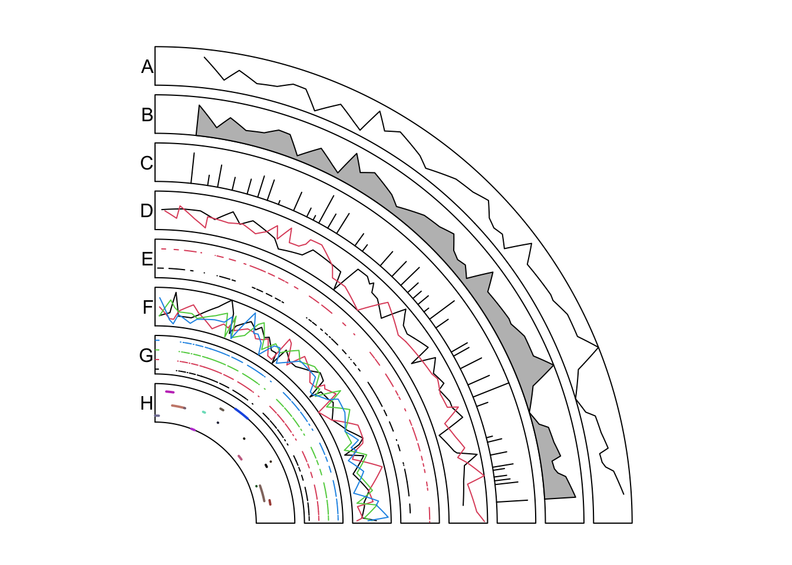
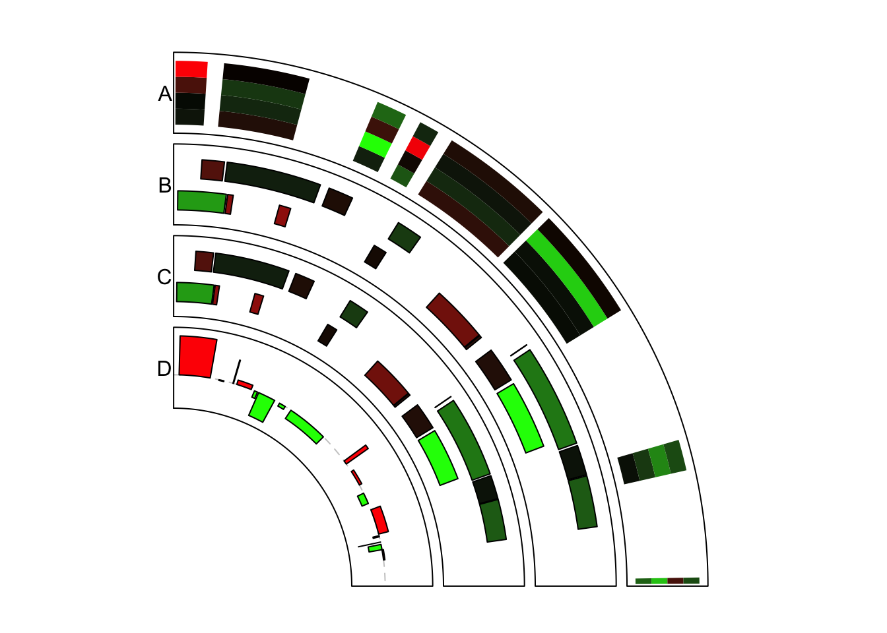

Modes for circos.genomicTrack()
Applications
Points
set.seed(999)
par1 = ccPar("track.height" = 0.1, start.degree = 90,
canvas.xlim = c(0, 1), canvas.ylim = c(0, 1), gap.degree = 270)
cc = ccPlot(initMode = "initializeWithIdeogram",chromosome.index = "chr1", plotType = NULL)
bed = generateRandomBed(nr = 300)
t1 = ccGenomicTrack(bed, panel.fun = function(region, value, ...) {
circos.genomicPoints(region, value, pch = 16, cex = 0.5, ...)
})
t2 = ccGenomicTrack(bed, stack = TRUE,
panel.fun = function(region, value, ...) {
circos.genomicPoints(region, value, pch = 16, cex = 0.5,...)
i = getI(...)
circos.lines(CELL_META$cell.xlim, c(i, i), lty = 2, col = "#00000040")
})
bed1 = generateRandomBed(nr = 300)
bed2 = generateRandomBed(nr = 300)
bed_list = list(bed1, bed2)
t3 = ccGenomicTrack(bed_list,
panel.fun = function(region, value, ...) {
i = getI(...)
circos.genomicPoints(region, value, pch = 16, cex = 0.5, col = i, ...)
})
t4 = ccGenomicTrack(bed_list, stack = TRUE,
panel.fun = function(region, value, ...) {
i = getI(...)
circos.genomicPoints(region, value, pch = 16, cex = 0.5, col = i, ...)
circos.lines(CELL_META$cell.xlim, c(i, i), lty = 2, col = "#00000040")
})
bed = generateRandomBed(nr = 300, nc = 4)
t5 = ccGenomicTrack(bed,
panel.fun = function(region, value, ...) {
circos.genomicPoints(region, value, pch = 16, cex = 0.5, col = 1:4, ...)
})
bed = generateRandomBed(nr = 300, nc = 4)
t6 = ccGenomicTrack(bed, stack = TRUE,
panel.fun = function(region, value, ...) {
i = getI(...)
circos.genomicPoints(region, value, pch = 16, cex = 0.5, col = i, ...)
circos.lines(CELL_META$cell.xlim, c(i, i), lty = 2, col = "#00000040")
})
cc + par1 + t1 + t2 + t3 + t4 + t5 + t6
circos.clear()

Add points under different modes.
Lines
par1 = ccPar("track.height" = 0.08, start.degree = 90,
canvas.xlim = c(0, 1), canvas.ylim = c(0, 1), gap.degree = 270,
cell.padding = c(0, 0, 0, 0))
cc = ccPlot(initMode = "initializeWithIdeogram", chromosome.index = "chr1", plotType = NULL)
bed = generateRandomBed(nr = 500)
t1 =ccGenomicTrack(bed,
panel.fun = function(region, value, ...) {
circos.genomicLines(region, value)
})
t2 =ccGenomicTrack(bed,
panel.fun = function(region, value, ...) {
circos.genomicLines(region, value, area = TRUE)
})
t3 =ccGenomicTrack(bed,
panel.fun = function(region, value, ...) {
circos.genomicLines(region, value, type = "h")
})
bed1 = generateRandomBed(nr = 500)
bed2 = generateRandomBed(nr = 500)
bed_list = list(bed1, bed2)
t4 =ccGenomicTrack(bed_list,
panel.fun = function(region, value, ...) {
i = getI(...)
circos.genomicLines(region, value, col = i, ...)
})
t5 =ccGenomicTrack(bed_list, stack = TRUE,
panel.fun = function(region, value, ...) {
i = getI(...)
circos.genomicLines(region, value, col = i, ...)
})
bed = generateRandomBed(nr = 500, nc = 4)
t6 =ccGenomicTrack(bed,
panel.fun = function(region, value, ...) {
circos.genomicLines(region, value, col = 1:4, ...)
})
bed = generateRandomBed(nr = 500, nc = 4)
t7 =ccGenomicTrack(bed, stack = TRUE,
panel.fun = function(region, value, ...) {
i = getI(...)
circos.genomicLines(region, value, col = i, ...)
})
bed = generateRandomBed(nr = 200)
t8 =ccGenomicTrack(bed,
panel.fun = function(region, value, ...) {
circos.genomicLines(region, value, type = "segment", lwd = 2,
col = rand_color(nrow(region)), ...)
})
cc + par1 + t1 + t2 + t3 + t4 + t5 + t6 + t7 + t8
circos.clear()

Add lines under different modes.
Rectangles
par1 = ccPar("track.height" = 0.15, start.degree = 90,
canvas.xlim = c(0, 1), canvas.ylim = c(0, 1), gap.degree = 270)
cc = ccPlot(initMode = "initializeWithIdeogram", chromosome.index = "chr1", plotType = NULL)
col_fun = colorRamp2(breaks = c(-1, 0, 1), colors = c("green", "black", "red"))
bed = generateRandomBed(nr = 100, nc = 4)
t1 = ccGenomicTrack(bed, stack = TRUE,
panel.fun = function(region, value, ...) {
circos.genomicRect(region, value, col = col_fun(value[[1]]), border = NA, ...)
})
bed1 = generateRandomBed(nr = 100)
bed2 = generateRandomBed(nr = 100)
bed_list = list(bed1, bed2)
t2 = ccGenomicTrack(bed_list, stack = TRUE,
panel.fun = function(region, value, ...) {
i = getI(...)
circos.genomicRect(region, value, ytop = i + 0.3, ybottom = i - 0.3,
col = col_fun(value[[1]]), ...)
})
t3 = ccGenomicTrack(bed_list, ylim = c(0.5, 2.5),
panel.fun = function(region, value, ...) {
i = getI(...)
circos.genomicRect(region, value, ytop = i + 0.3, ybottom = i - 0.3,
col = col_fun(value[[1]]), ...)
})
bed = generateRandomBed(nr = 200)
t4 = ccGenomicTrack(bed,
panel.fun = function(region, value, ...) {
circos.genomicRect(region, value, ytop.column = 1, ybottom = 0,
col = ifelse(value[[1]] > 0, "red", "green"), ...)
circos.lines(CELL_META$cell.xlim, c(0, 0), lty = 2, col = "#00000040")
})
cc + par1 + t1 + t2 + t3 + t4
circos.clear()

Add rectangles under different modes.